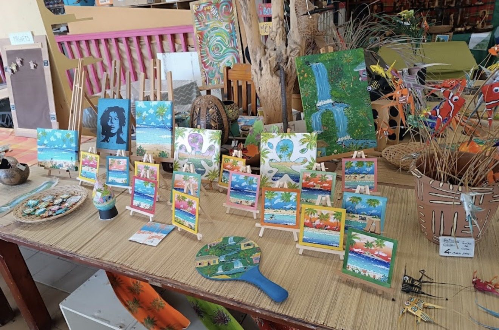
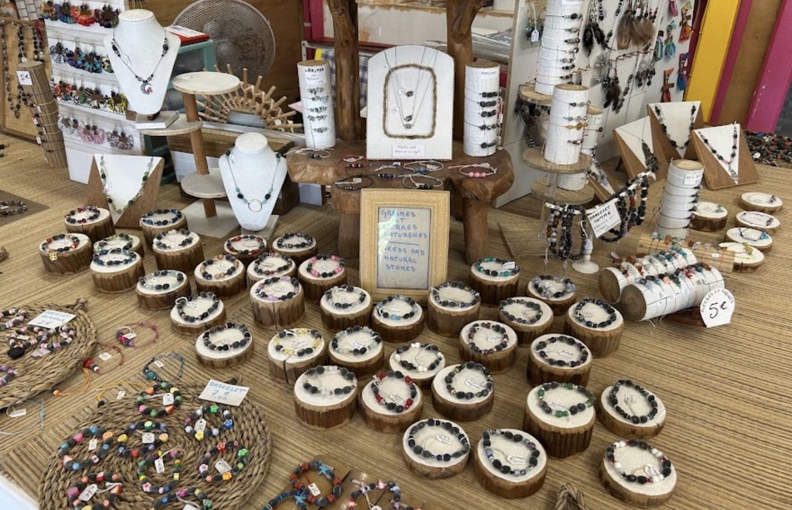
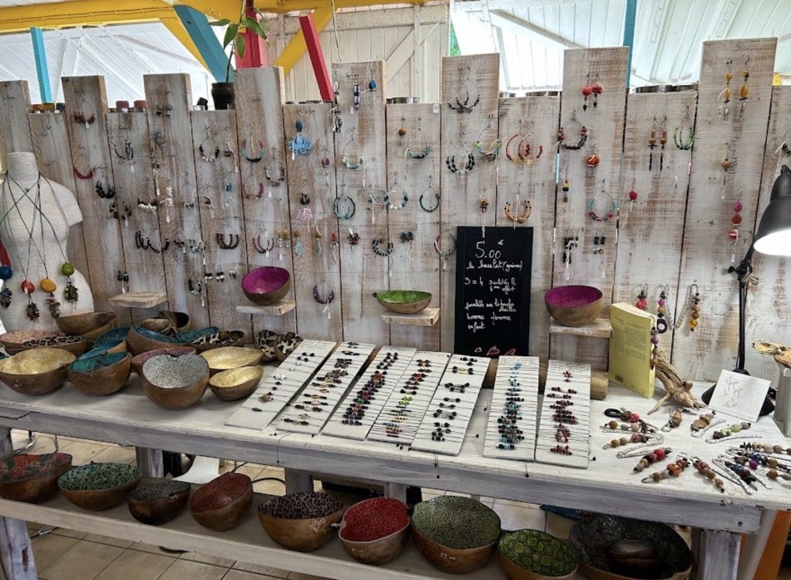

Tableaux & gouaches
Peints à la main sur toile ou sur bois. Du format carte postale qui rentre dans la valise au grand tableau de cascade.
à partir de 4 € · pièce unique
Anse des Galets · Pointe des Châteaux
Une case en bois peint où tout ce qui est vendu a été fabriqué en Guadeloupe : tableaux à la gouache, bijoux montés sur graines de l'île, calebasses poncées à la main, madras, rhums arrangés et confitures.
Dans la boutique
Chaque table est tenue par des artisans de l'île. Les prix sont affichés à la main, comme depuis le premier jour.

Peints à la main sur toile ou sur bois. Du format carte postale qui rentre dans la valise au grand tableau de cascade.
à partir de 4 € · pièce unique

Bracelets et colliers montés sur place, à partir de graines ramassées sur l'île et de pierres naturelles.
bracelet 5 à 7 € · 3 achetés, 1 offert

Coupes en calebasse séchées, poncées puis laquées. Paniers tressés, boucles d'oreilles et objets de table.
coupe dès 12 € · boucles dès 5 €
Foulards et têtes calendées en madras, punchs et rhums arrangés, confitures de fruits du jardin, épices.
confiture dès 6 € · dégustation sur place
La case
La boutique est installée sur la route de la Pointe des Châteaux, dans une case repeinte chaque année en jaune, rose et turquoise. Impossible de la rater : c'est la seule de la route à avoir gardé ses couleurs.
Ici, rien n'est importé. Une trentaine d'artisans du Sud Grande-Terre déposent leurs pièces : les peintres passent le lundi, les bijoutières montent leurs bracelets sur place, et les confitures arrivent encore tièdes.
Avant de passer
On est sur la route de la Pointe des Châteaux, côté Anse des Galets. Arrêtez-vous avant le parking du site, pas après.
| Lundi – vendredi | 8h30 – 17h30 |
|---|---|
| Samedi | 8h30 – 18h00 |
| Dimanche | 9h00 – 17h00 |
| Jours fériés | Nous appeler |
Une question ?
Pour savoir si une pièce est encore là, réserver un cadeau ou annoncer un groupe.